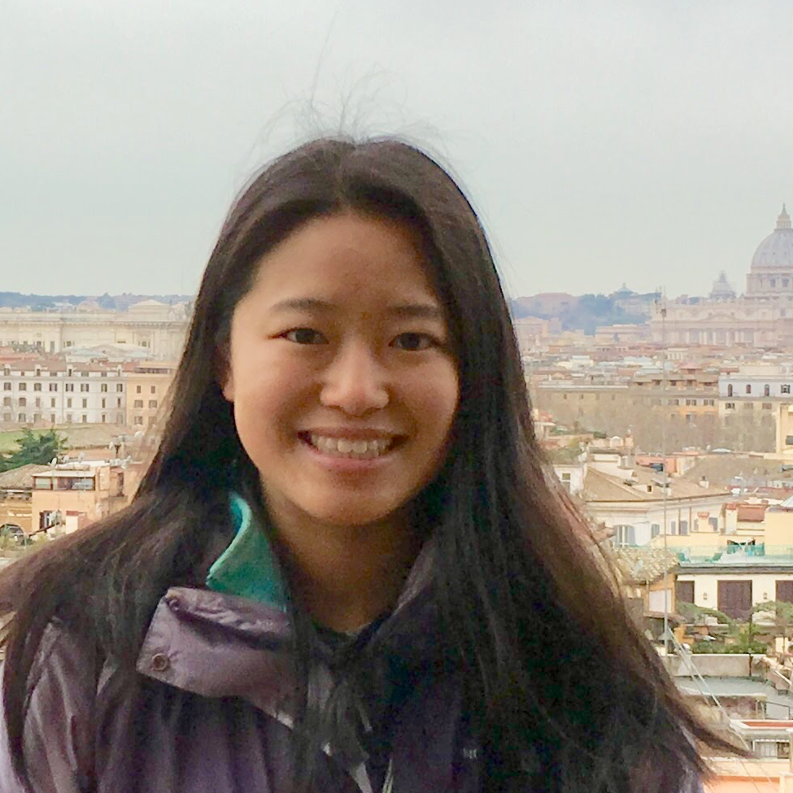

|  |
|
I am a first-year graduate student and NSF Graduate Research Fellow in EECS at CSAIL/MIT, advised by Phillip Isola. I am currently studying topics in generative modeling, computer vision, machine learning, and cognitive science.
Previously I was at Churchill College, University of Cambridge. I did an MPhil in Machine Learning, where I studied uncertainty and interpretability in Bayesian neural networks. I am extremely grateful for support from the Churchill Scholarship.
I completed my undergraduate degree at the University of Pennsylvania in Computer Science and Bioengineering. I worked with Dr. Danielle S. Bassett in computational neuroscience, focusing on modelling neural processes as dynamic networked systems.
| 2019 |
| Evolution of semantic networks in biomedical texts Lucy R. Chai, Dale Zhou, Danielle S. Bassett Journal of Complex Networks, 2019. |
| 2018 |
| Uncertainty Estimation in Bayesian Neural Networks and Links to Interpretability Lucy R. Chai Department of Engineering, University of Cambridge, 2018. [Thesis] [Code] | Name and Face Matching Henderson J. C., Gertner, A., Zarella, G., Chai, L. R., Miller, K MITRE Corporation; US. Patent App. 16/042,958. |
Development of a Next Generation Tomosynthesis System Jeffrey E. Eben, Trevor L. Vent, Chloe J. Choi, Sushmitha Yarrabothula, Lucy Chai, Margaret Nolan, Elizabeth Kobe, Raymond J. Acciavatti, Andrew D. A. Maidment SPIE Medical Imaging Conference, 2018. [Paper] |
| 2017 |
| Evolution of brain network dynamics in neurodevelopment Chai, L. R., Khambhati, A. N., Ciric, R., Moore, T., Gur, R. C., Gur, R. E., Satterthwaite, T. D., Bassett, D.S. Network Neuroscience, 2017. [Paper] [Code] |
| 2016 |
| Functional network dynamics of the language system Chai, L. R., Mattar, M. G., Blank, I. A., Fedorenko, E., and Bassett, D. S. Cerebral Cortex, 2016. [Paper] |